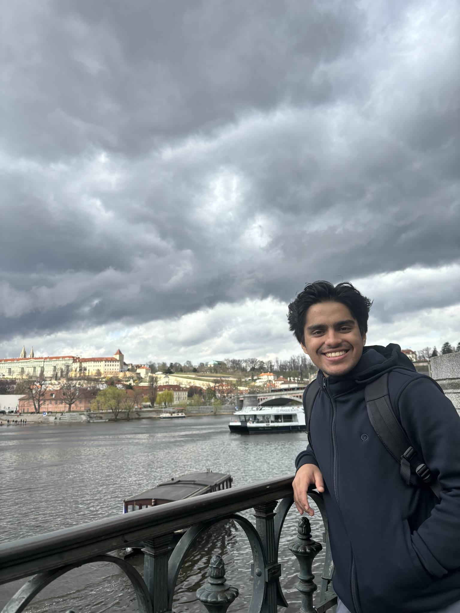

Aadim Neoal
I am an undergraduate at NYU Abu Dhabi working with Professor Keith Ross at the NYUAD Deep Learning Lab on LLM interpretability and reasoning. My current research focuses on reasoning in continuous latent space, exploring how models can perform complex reasoning tasks within lower-dimensional representations.
Previously, I conducted research on multimodal machine learning for stroke prediction with Professor Farah Shamout at the NYUAD Clinical AI Lab. Prior to university, I worked on soil microbiome analysis and computational drug discovery, which sparked my continued interest in computational biology and genomics applications.
My research philosophy centers on the principle that complex, high-dimensional phenomena can be understood through their lower-dimensional representations. This perspective guides my work across machine learning and computational biology, where I aim to uncover the fundamental abstractions that govern these systems.
